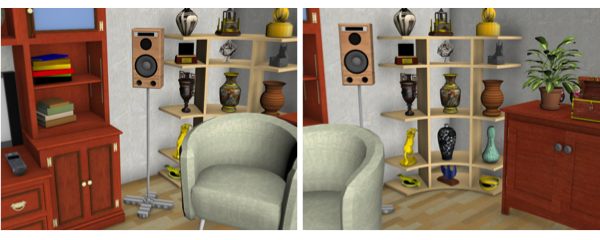
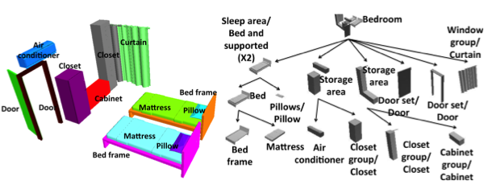
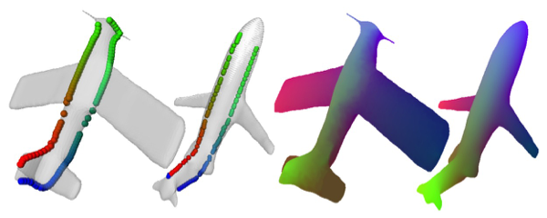

|
Tianqiang Liu
ltq (at) google.com
I am currently working at Google on Street View.
|
| Style Compatibility For 3D Furniture Models Tianqiang Liu, Aaron Hertzmann, Wilmot Li, Thomas Funkhouser SIGGRAPH 2015 [PDF 6.6M] [Bib] [Code and Data] [Supplemental material] [Video] [Talk PPTX PDF] [Project page] |
|
|  | Composition-Aware Scene Optimization for Product Images Tianqiang Liu, Jim McCann, Wilmot Li, Thomas Funkhouser Eurographics 2015 [PDF 24.1M 0.5M] [Bib] [Supplemental material] [Video] [Talk PPTX PDF] [Project page] |
|  | Creating Consistent Scene Graphs Using a Probabilistic Grammar Tianqiang Liu, Siddhartha Chaudhuri, Vladimir G. Kim, Qi-Xing Huang, Niloy J. Mitra, Thomas Funkhouser SIGGRAPH Asia 2014 [PDF 12.7M 0.7M] [Bib] [Code and Data] [Supplemental material] [Talk PPTX PDF] [Project page] |
|  | Finding Surface Correspondences Using Symmetry Axis Curves Tianqiang Liu, Vladimir G. Kim, Thomas Funkhouser Eurographics Symposium on Geometry Processing 2012 [PDF] [Bib] [Code and Data] [Supplemental material] [Project page] |
| Efficient Affinity-based Edit Propagation using K-D Tree Kun Xu, Yong Li, Tao Ju, Shi-Min Hu, Tianqiang Liu SIGGRAPH Asia 2009 [PDF] [Bib] |
| Analyzing, Optimizing and Synthesizing Scenes by Reasoning About Relationships Between Objects Tianqiang Liu PhD Thesis, September 2015 [PDF] [Bib] [Talk PPTX PDF] |
{kind=link}
{kind=link}
{kind=link}
{kind=link}
{kind=link}